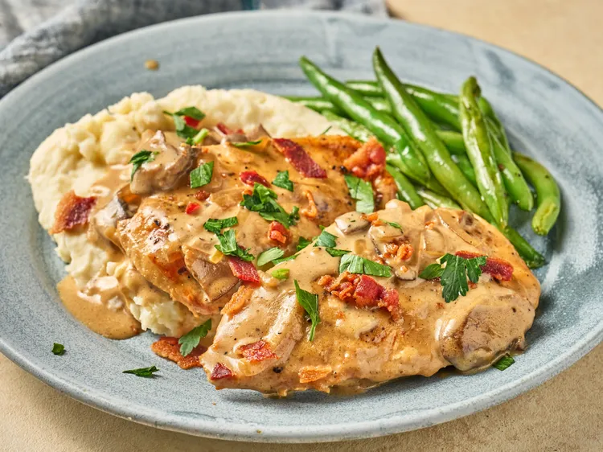

Shortcut Smothered Chicken
Home

Description
This smothered chicken recipe has juicy pan-fried chicken in the ultimate gravy! It's rich, perfectly seasoned, and made from scratch with pantry staples.
It's weeknight comfort food at its finest.
Ingredients
- 1 ½ pounds chicken cutlets, about 6 ounces each
- 1 teaspoon lemon pepper
- ½ teaspoon salt
- ½ teaspoon ground black pepper
- ½ teaspoon paprika
- 1 ½ tablespoons olive oil
- 2 tablespoons butter
- 1 teaspoon minced garlic
- ½ medium onion, halved and thinly sliced
- 8 ounces sliced mushrooms
- 1 ½ tablespoons all-purpose flour
- 1 ¼ cups chicken broth
- ½ cup heavy cream
- fresh choped parsley, for garnish (optional)
Steps
- Seasoned chicken cutlets evenly with lemon pepper, salt, pepper, and paprika.
- Heat oil in a large skillet over medium-high heat. Add chicken and cook until browned, 3 to 5 minutes per side. Chicken may not be cooked through at this point. Remove from pan and keep warm.
- Add butter to drippings in the skillet and allow it to melt. Add garlic and onion and cook for 1 minute, stirring constantly. Add mushrooms and cook, stirring constantly until lightly browned and vegetables are tender, about 4 minutes. Sprinkle over flour and cook, stirring constantly for 1 minute.
- Add broth and cook, scraping up any browned bits from the pan. Add cream and bring mixture to a boil, stirring often until mixture begins to thicken. Return chicken to the pan and allow mixture to simmer and cook until chicken is cooked through and sauce is thick and creamy. About 5 minutes.
- Serve chicken and sauce over rice or mashed potatoes and garnish with parsley.